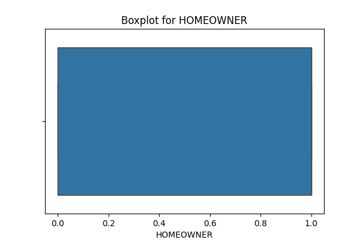
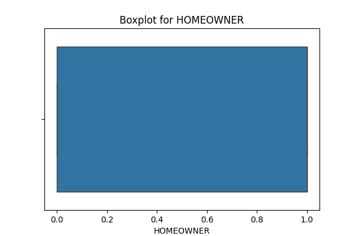

Data Analysis Report
1. Columns with Missing Values
- STATE
- TENURE_IN_MONTHS
- CLOSESTSTOREDISTANCE
- AGE
- INCOME
- LENGTH OF RESIDENCE
- NUMBER OF PERSONS IN LIVING UNIT
- NUMBER OF ADULTS IN LIVING UNIT
- MOSAIC
- CAPE: AGE: POP: MEDIAN AGE
- CAPE: AGE: POP: % 0-17
- CAPE: AGE: POP: % 18-99+
- CAPE: AGE: POP: % 65-99+
- CAPE: ETHNIC: POP: % WHITE ONLY
- CAPE: ETHNIC: POP: % BLACK ONLY
- CAPE: ETHNIC: POP: % ASIAN ONLY
- CAPE: ETHNIC: POP: % HISPANIC
- CAPE: DENSITY: PERSONS PER HH FOR POP IN HH
- CAPE: HHSIZE: HH: AVERAGE HOUSEHOLD SIZE
- CAPE: TYP: HH: % MARRIED COUPLE FAMILY
- CAPE: CHILD: HH: % WITH PERSONS LT18
- CAPE: CHILD: HH: % MARR COUPLE FAMW- PERSONS LT18
- CAPE: CHILD: HH: % MARR COUPLE FAMW-O PERSONS LT18
- CAPE: LANG: HH: % SPANISH SPEAKING
- CAPE: EDUC: POP25+: MEDIAN EDUCATION ATTAINED
- CAPE: HOMVAL: OOHU: MEDIAN HOME VALUE
- CAPE: BUILT: HU: MEDIAN HOUSING UNIT AGE
- CAPE: TENANCY: OCCHU: % OWNER OCCUPIED
- CAPE: TENANCY: OCCHU: % RENTER OCCUPIED
- CAPE: EDUC: ISPSA
- CAPE: EDUC: ISPSA DECILE
- CAPE: INC: FAMILY INC STATE DECILE
- CAPE: INC: HH: MEDIAN FAMILY HOUSEHOLD INCOME
2. Numeric Columns
- CUSTOMERID
- LCPCOUNT
- TENURE_IN_MONTHS
- CLOSESTSTOREDISTANCE
- FEMALE
- AGE
- HS_DIPLOMA
- SOME_COLLEGE
- BACH_GRAD_DEG
- LT_HS_DIPLOMA
- MARRIED
- MNGMNT_OFFICEADMIN
- TECH_PROF
- SALES_JOB
- BLUE_COLLAR
- FARMER
- RETIRED
- SFDU
- MFDU
- HOMEOWNER
- INCOME
- MAIL_RESP_MULTI
- MAIL_RESP_SINGLE
- LENGTH OF RESIDENCE
- NUMBER OF PERSONS IN LIVING UNIT
- NUMBER OF ADULTS IN LIVING UNIT
- METRO
- URBAN
- MOR BANK: UPSCALE MERCHANDISE BUYER
- MOR BANK: MALE MERCHANDISE BUYER
- MOR BANK: FEMALE MERCHANDISE BUYER
- MOR BANK: CRAFTS-HOBBY MERCHANDISE BUYER
- MOR BANK: GARDENING-FARMING BUYER
- MOR BANK: BOOK BUYER
- MOR BANK: COLLECT-SPECIAL FOODS BUYER
- MOR BANK: GIFTS AND GADGETS BUYER
- MOR BANK: GENERAL MERCHANDISE BUYER
- MOR BANK: FAMILY AND GENERAL MAGAZINE
- MOR BANK: FEMALE ORIENTED MAGAZINE
- MOR BANK: MALE SPORTS MAGAZINE
- MOR BANK: RELIGIOUS MAGAZINE
- MOR BANK: GARDENING-FARMING MAGAZINE
- MOR BANK: CULINARY INTERESTS MAGAZINE
- MOR BANK: HEALTH AND FITNESS MAGAZINE
- MOR BANK: DO-IT-YOURSELFERS
- MOR BANK: NEWS AND FINANCIAL
- MOR BANK: PHOTOGRAPHY
- MOR BANK: OPPORTUNITY SEEKERS AND CE
- MOR BANK: RELIGIOUS CONTRIBUTOR
- MOR BANK: POLITICAL CONTRIBUTOR
- MOR BANK: HEALTH AND INSTITUTION CONTRIBUTOR
- MOR BANK: GENERAL CONTRIBUTOR
- MOR BANK: MISCELLANEOUS
- MOR BANK: ODDS AND ENDS
- MOR BANK: DEDUPED CATEGORY HIT COUNT
- MOR BANK: NON-DEDUPED CATEGORY HIT COUNT
- MORTGAGE-HOME PURCHASE: HOME PURCHASE PRICE
- CHILDREN
- CAPE: AGE: POP: MEDIAN AGE
- CAPE: AGE: POP: % 0-17
- CAPE: AGE: POP: % 18-99+
- CAPE: AGE: POP: % 65-99+
- CAPE: ETHNIC: POP: % WHITE ONLY
- CAPE: ETHNIC: POP: % BLACK ONLY
- CAPE: ETHNIC: POP: % ASIAN ONLY
- CAPE: ETHNIC: POP: % HISPANIC
- CAPE: DENSITY: PERSONS PER HH FOR POP IN HH
- CAPE: HHSIZE: HH: AVERAGE HOUSEHOLD SIZE
- CAPE: TYP: HH: % MARRIED COUPLE FAMILY
- CAPE: CHILD: HH: % WITH PERSONS LT18
- CAPE: CHILD: HH: % MARR COUPLE FAMW- PERSONS LT18
- CAPE: CHILD: HH: % MARR COUPLE FAMW-O PERSONS LT18
- CAPE: LANG: HH: % SPANISH SPEAKING
- CAPE: EDUC: POP25+: MEDIAN EDUCATION ATTAINED
- CAPE: HOMVAL: OOHU: MEDIAN HOME VALUE
- CAPE: BUILT: HU: MEDIAN HOUSING UNIT AGE
- CAPE: TENANCY: OCCHU: % OWNER OCCUPIED
- CAPE: TENANCY: OCCHU: % RENTER OCCUPIED
- CAPE: EDUC: ISPSA
- CAPE: EDUC: ISPSA DECILE
- CAPE: INC: FAMILY INC STATE DECILE
- CAPE: INC: HH: MEDIAN FAMILY HOUSEHOLD INCOME
- FREQUENCY
- QUANTITY
- TOTALSALES
- FREQUENCY_2Y
- QUANTITY_2Y
- TOTALSALES_2Y
- 1-Engagement Spend
- 2-Wedding Bands Spend
- 3-Fashion Diamonds Spend
- 4-Fashion Jewelry Spend
- 5-Close Out Spend
- 6-Promotional Items Spend
- 7-Cost Only Spend
- 8-Marketing Premium SKUs Spend
- 9-Repairs & Appraisals Spend
- 10-Pre Owned Spend
- 11-Watches Spend
- 12-Misc Merchandise Spend
- 15-Store Events Spend
- 16-Single Stone Jewelry Spend
- MDAYREV_L1Y
- MDAYREV_L2Y
- MDAYREV_L3Y
- MDAYREV_L4Y
- MDAYQTY_L1Y
- MDAYQTY_L2Y
- MDAYQTY_L3Y
- MDAYQTY_L4Y
- MDAYSHOPPER_L1Y
- MDAYSHOPPER_L2Y
- MDAYSHOPPER_L3Y
- MDAYSHOPPER_L4Y
3. Categorical Columns
- STATE
- PRIVATELABELTENDERFLAG
- MOSAIC
4. Duplicate Columns
['CHILDREN', 'CAPE: HHSIZE: HH: AVERAGE HOUSEHOLD SIZE', '7-Cost Only Spend']
5. Constant Columns
['MARRIED', 'CHILDREN', '7-Cost Only Spend']
6. Boxplots
 



7. Distributions